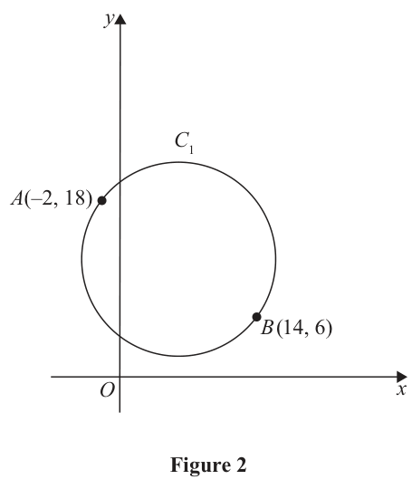
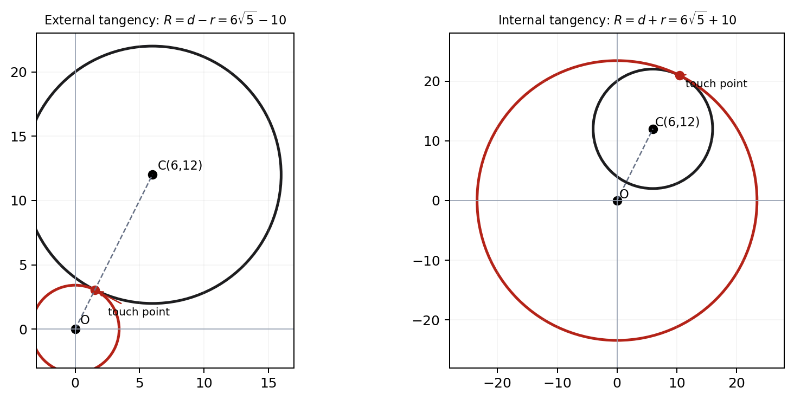

Source/status: Pearson WMA12/01, 15 October 2025, Q6. Part (a) was original correct; part (b) was completed live with moderate prompting after an algebraic dead end.
The points $A(-2,18)$ and $B(14,6)$ lie on a circle $C_1$ as shown in Figure 2.

Given that $AB$ is a diameter of the circle $C_1$(a) find an equation for $C_1$ making your method clear. (5)
A circle $C_2$ has its centre at the origin. Given that circles $C_1$ and $C_2$ touch,
(b) find possible equations for $C_2$. (4)
[9 marks]
Strategy and why it applies. Use the diameter endpoints to find the centre as their midpoint and the radius as half their separation. Then insert those values into the standard centre-radius equation. This is more direct and transparent than introducing a general circle equation with three unknown coefficients because the geometry supplies centre and diameter immediately.
Formula / definition first. A circle with centre $(a,b)$ and radius $r$ has equation $(x-a)^2+(y-b)^2=r^2$. The midpoint of endpoints $(x_1,y_1)$ and $(x_2,y_2)$ is $((x_1+x_2)/2,(y_1+y_2)/2)$, and the distance formula gives the diameter length.
Complete working. The midpoint of $A(-2,18)$ and $B(14,6)$ is $(({-2+14})/2,(18+6)/2)=(6,12)$. The vector $\overrightarrow{AB}=(16,-12)$ has length $\sqrt{16^2+(-12)^2}=\sqrt{400}=20$, so the radius is $10$. Therefore $\boxed{(x-6)^2+(y-12)^2=100}$.
Difficult transition. The difficult transition is diameter to radius. The distance calculation gives 20 for $AB$, but the circle radius is half that value. The sign inside the equation is also opposite the centre coordinate: centre $(6,12)$ produces $(x-6)$ and $(y-12)$, not plus signs.
What went wrong / common trap. The tutor confirmed this part as correct; no personal error should be invented. A neutral common trap is to use $AB^2=400$ directly as $r^2$, which would double the radius, or to average absolute coordinate differences rather than coordinates when finding the midpoint.
Sense check and verification. Verify both endpoints satisfy the equation. For $A$, $(-2-6)^2+(18-12)^2=64+36=100$. For $B$, $(14-6)^2+(6-12)^2=64+36=100$. The midpoint also lies halfway between them, so the centre and radius are internally consistent.
Exam trigger and transfer. When a chord is explicitly a diameter, midpoint first, then half-distance, then centre-radius form. On another paper, substitute both endpoints into the final equation as a rapid check and keep the method visible because 'making your method clear' demands more than a correct equation alone.
Strategy and why it applies. Draw the centre line before writing equations. The origin-centred circle can touch $C_1$ in two configurations: a smaller circle externally tangent on the near side, or a larger circle internally tangent around $C_1$. The plural 'possible equations' is a source clue that both centre-distance minus radius and centre-distance plus radius are required.
Formula / definition first. For circles with centre separation $d$ and radii $r_1,r_2$, external tangency satisfies $d=r_1+r_2$, while internal tangency satisfies $d=|r_2-r_1|$. Here the distance from $O(0,0)$ to the centre $(6,12)$ of $C_1$ is $d=\sqrt{6^2+12^2}=6\sqrt5$, and $r_1=10$.
Complete working. The smaller origin-centred radius is $r_2=d-r_1=6\sqrt5-10$; the larger is $r_2=d+r_1=6\sqrt5+10$. Thus $$x^2+y^2=(6\sqrt5-10)^2=280-120\sqrt5,$$ or $$x^2+y^2=(6\sqrt5+10)^2=280+120\sqrt5.$$ Both are valid possible equations.
Difficult transition. The difficult transition is seeing why adding is not an arbitrary second algebraic branch. For the smaller circle, the centres and radii satisfy external tangency. For the enclosing circle, the centre separation equals the difference of radii, so the outer radius is $d+10$. A labelled diagram makes each length relation visible.
What went wrong / common trap. The recorded first route equated the two circle equations and reached an algebraic dead end because points of contact were unknown. With a diagram, the learner proposed centre distance minus radius and completed both cases. The lesson diagnosis is therefore 'diagram before forcing algebra', not inability to use the circle formula.
Sense check and verification. Check positivity and tangency. Since $6\sqrt5\approx13.416$, the small radius is about $3.416>0$ and the large radius about $23.416$. For the first, $3.416+10=13.416$; for the second, $23.416-10=13.416$. Both exactly satisfy their relevant tangency conditions.
Exam trigger and transfer. When two circles have fixed centres and the question says 'possible', sketch nested and non-nested cases, compute centre distance, and write sum/difference radius relations before squaring. On another paper, leave exact surds until the final equation and verify each branch against external or internal tangency.
